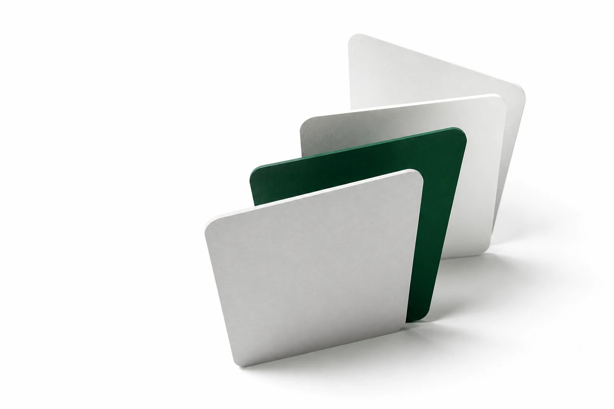

Automatic rotation
Choose the tabs you need and move through them on a clear, configurable interval.
Private browser automation
Rotate selected tabs automatically and refresh them on a schedule. Your settings and browsing metadata stay inside your browser.

Built for
Chrome
Version 120+
Microsoft Edge
Version 120+
Firefox
Version 140+
Set up the tabs you need, let them run, and stop everything whenever you choose.
Choose the tabs you need and move through them on a clear, configurable interval.
Keep dashboards and other changing pages current without repeatedly reloading them yourself.
No analytics, remote logging, account, or cloud service. Extension data remains on your device.
Tab Manipulator does its work locally and asks only for the permissions required to manage your schedules.